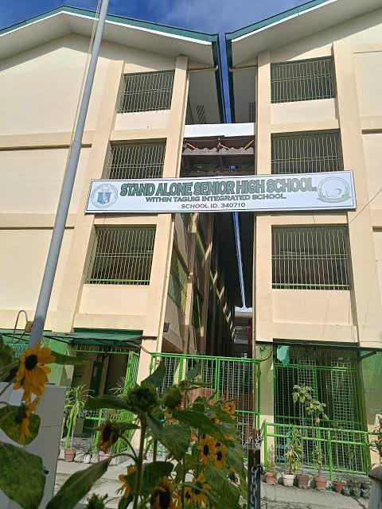
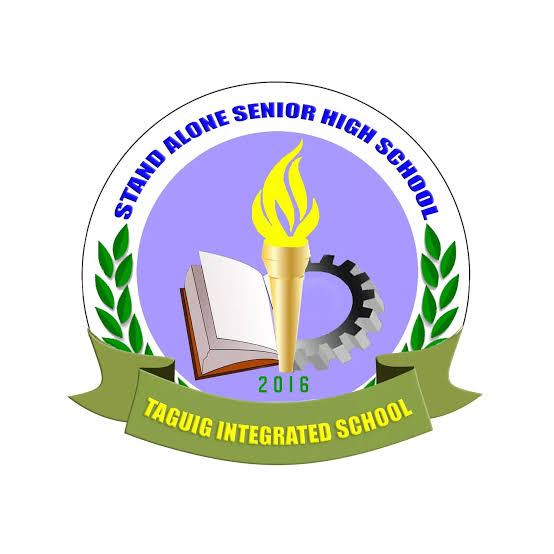
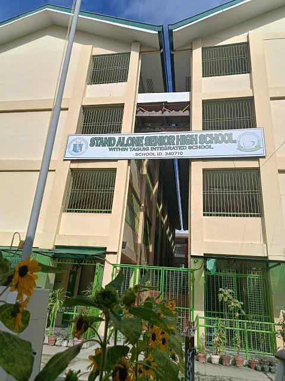
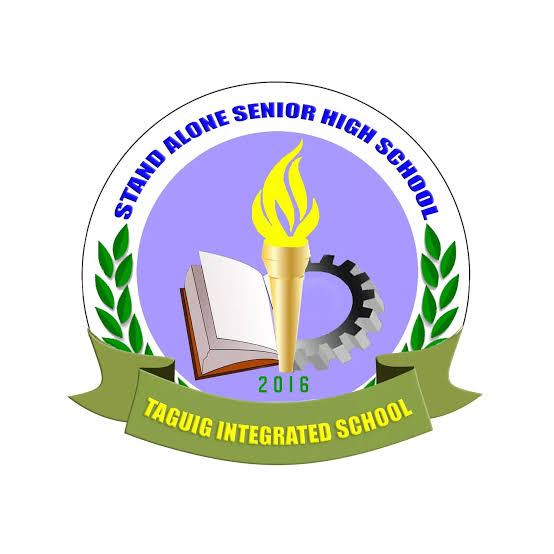
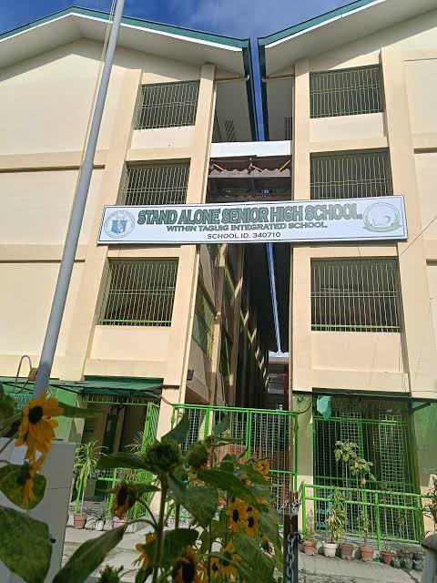
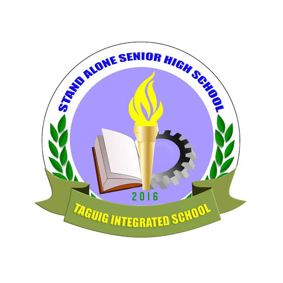
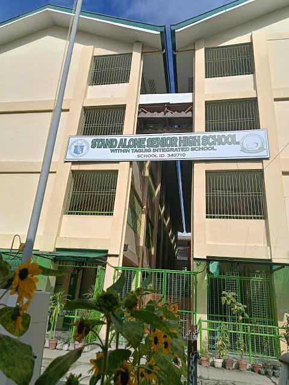
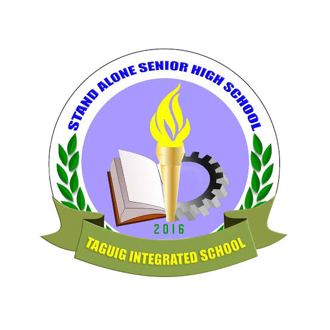

DESCRIPTION:A stand-alone Senior High School (SHS) is a secondary school that operates independently from a Junior High School (JHS) or Integrated School (IS). It has its own distinct location and a separate school head (principal). This contrasts with Integrated SHS, which is located within an existing JHS or IS and shares the same school head. Essentially, a stand-alone Senior High School is a separate institution specifically dedicated to Grades 11 and 12, the final two years of the K to 12 program in the Philippines. It offers specialized upper secondary education based on the chosen tracks and strands. Here's a breakdown: stand-alone: A senior high school with its own campus and principal, seperate from any other school, integrated: A senior high school within an existing junior high school or integrated, sharing the same principal..